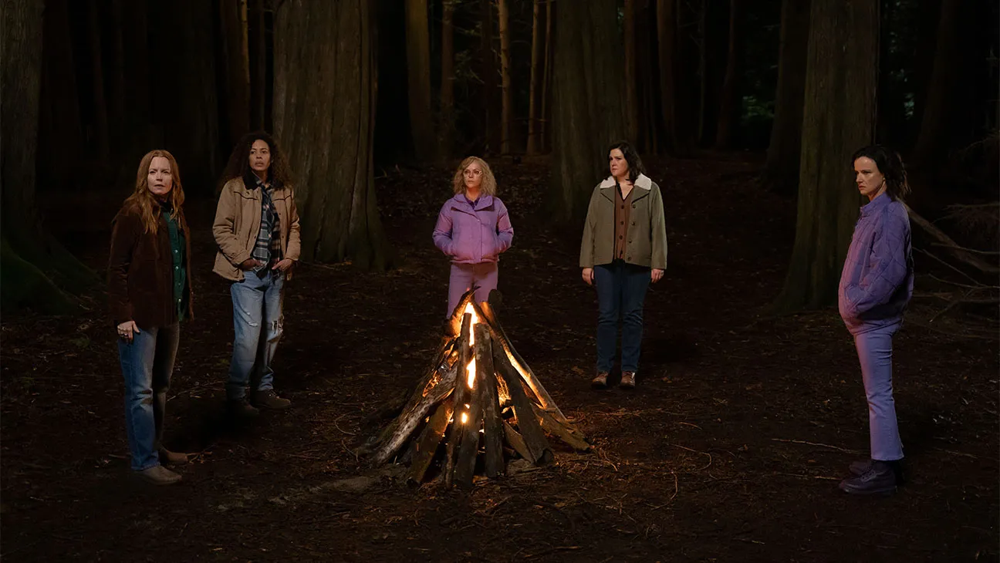
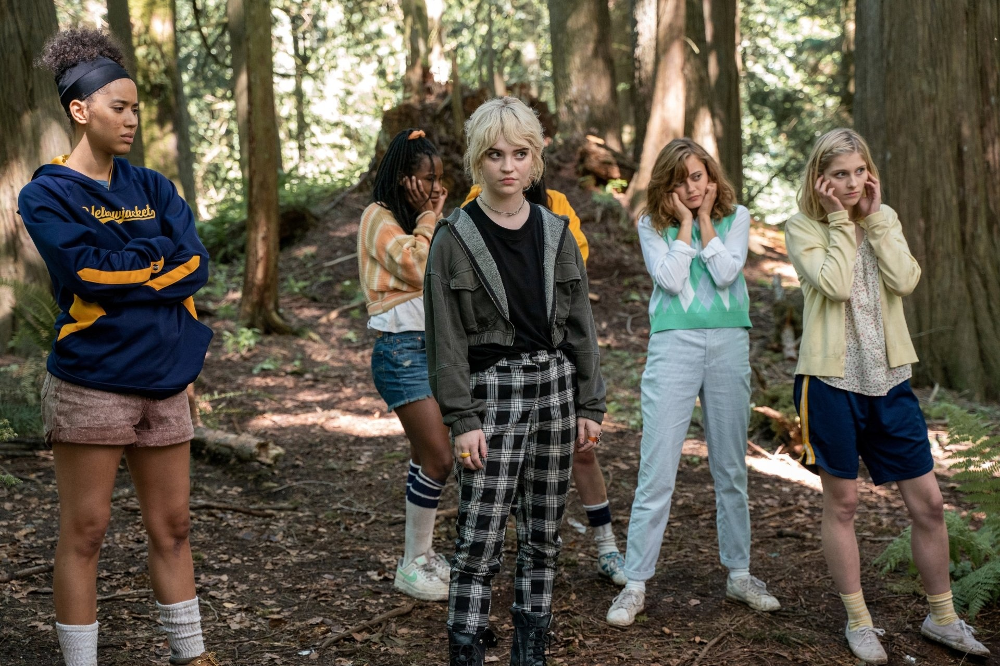

A Stellar Cast of Complex Characters
One of Yellowjackets biggest strengths is its talented ensemble cast, which brings depth and authenticity to the story. The younger cast members perfectly capture the fear, desperation, and eventual corruption of their stranded characters. Meanwhile, the adult cast—including Melanie Lynskey, Christina Ricci, Juliette Lewis, and Tawny Cypress—bring a gripping intensity to their roles as survivors dealing with decades of trauma. Each character has a distinct personality that influences their actions, from the determined leader to the unpredictable outcast. Over time, the show peels back their layers, revealing hidden motivations and past decisions that haunt them. The dual timelines allow viewers to see how each character has evolved, or in some cases, regressed. This strong character development keeps audiences invested, as every survivor has their own dark history waiting to be uncovered.
Theories and Fan Speculation
Since its debut, Yellowjackets has inspired endless fan theories and speculation about what truly happened in the wilderness. Some believe the survivors were influenced by supernatural forces, while others argue that their actions were purely psychological responses to extreme stress. The show drops cryptic hints through its cinematography, symbols, and eerie flashbacks, leading to countless online discussions. Who survived? Who didn’t? And what exactly transpired during their time in the wild? These questions keep audiences engaged and eagerly anticipating each new episode. Some fans believe certain characters may not be as innocent as they seem, while others question whether everyone truly made it out alive. With each reveal, the show deepens the mystery, ensuring that theories will continue to evolve as more is uncovered.
Cultural Impact and Popularity
Yellowjackets has quickly become a cultural phenomenon, praised for its originality, suspense, and complex female characters. The show has sparked conversations about trauma, survival psychology, and the long-lasting effects of extreme experiences. Its nostalgic 90s soundtrack and eerie atmosphere resonate with audiences, giving it a unique aesthetic that sets it apart from other thrillers. Fans have dissected every episode, analyzing its hidden clues and debating the fate of various characters. The series has also been recognized for its representation of strong, multifaceted women in horror, breaking away from traditional tropes. With its growing fan base and critical acclaim, Yellowjackets has solidified itself as one of the most talked-about shows in recent years. Its gripping narrative and chilling undertones make it a standout in the psychological thriller genre.
Why Yellowjackets Stands Out
- Strong female-led cast and diverse characters
- Unique mix of survival horror and psychological drama
- Engaging nonlinear storytelling and mystery elements
- Thought-provoking themes of trauma and identity
- A dedicated fan base and growing cult following